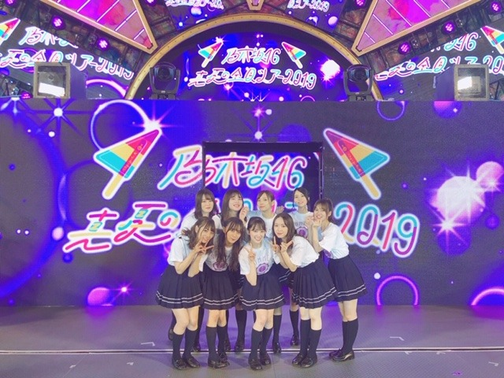

2019/0906Fri芋栗秋刀魚柿全部すき

神宮ライブ3日間ありがとうございました！
今年も、最高の夏の思い出ができました☺︎
乃木坂46として毎年、神宮球場のステージに立たせていただけてその年ごとに感じることや景色が違って凄く成長させていただけるライブだなぁと感じています
1期生の方の力強い背中をみながら私達2期生はついていくことにとにかく必死だった初めての神宮ライブ
アンダーとしてステージに立ち、別れ際もっと好きになるという大好きな曲を披露し悔しさも味わいながら成長できたライブ
みんなでたくさん汗を流して泣いてぶつけて楽しんだ初めての期生別ライブ
２会場同時開催でバースデーライブとしていろんな曲を振り返ったライブ
そして今回は4期生も入り、新たな乃木坂46の形を魅せたライブでした☺︎
キャプテンの玲香さんの卒業セレモニーもありました
玲香さんが終始笑顔でライブをしていたのが凄く印象的で、たくさん残してくださったものを残されたメンバー達で大切にしていけたらな、と思いました
本当にお疲れ様でした☺︎
グループがいろんな形に変わっていくのを毎年ひしひしと感じます
現状維持 というものはアイドル界にはなくて一人としてもグループとしても常に成長や進化をしていかなくてはいけないからそんな現実を受け入れながらも、たまに懐かしみながら...前を見ています。見るしかないです。でも、楽しいです。素敵な部分だけ変わらず残っていくことができたらきっとこれからも楽しいのかな。
変わってほしくない部分や受け継いでいってほしい部分ももちろんたくさんあって、そんなことは私達が後輩にもしっかりと伝えていかなきゃなと思うし
これからの乃木坂を創っていく後輩には先輩の真似や代わりではなくて、"他の誰でもない自分自身"として自信を持ってもらえるように私もサポートしていきたいです✨
頼りないけど...
もちろん！私も頑張る！！
ずっと乃木坂でいれたら幸せなのになぁ
来世も。来来世も。このメンバーで。
打ち上げもすーごく楽しくてたくさん笑いました！
純奈、笑いすぎてお腹筋肉痛になったって。笑
2期生同じ机で、みんなで動画回したり盛り上がったり❤︎
幸せ！
もっとたくさん思い出作りたいなぁ 大好きだぁ

私服もネイルも白が多かった夏。
夏もいいけど秋の方がわたしはもっと好き！生まれ月っていうのもあるけど何よりご飯が美味しいですよね✨
あっ、でも食べ過ぎ注意ですね......

そして
9.28のガールズアワードに出させていただきます❤︎
わ〜い！嬉しい〜！！！！
楽しみです
もうすっかり秋なので
衣替えをしたり
くすみクリームベージュ系ネイルにしたり
ルームウェアを変えたり
ルームデュフューザーや香水を秋冬向けの重めの甘いのにしてみたり
メイクも、落ち着いたブラウンやくすみ系、オレンジを混ぜたメイクに変えて
秋を楽しみ始めています...❤︎
お部屋のスリッパも、モコモコにしよ。
もうコートまで買っちゃった。笑 早いかな。笑
今年の秋冬は春夏よりも"甘々気分"です
くすみ系の色とかベージュやブラウンやピンクで甘女子たのしみたいなぁ❤︎

これはarでブラウンネイルしてもらったとき❤︎
マーブルチョコみたい❤︎❤︎❤︎
最近ネイル変えたのでまたブログ載っけますね〜

良い匂いのハンドソープを使うと癒される♪
イソップ、ジョンマスター、ジョーマローンあたりも好き
最近は素敵な家具をみてね、
あー！いつかこんな家具を置ける広いおうちに住みたい！
って勝手に想像で模様替えを楽しんでいます。
海外のインテリアってかわいいのよね。
あと、久しぶりにピーマン食べたら
なんだかんだ美味しかったです
ピーマンの肉詰めの"ピーマン"と"肉"のバランス良すぎて毎度感動
では☺︎
2019/09/06 10:00
コメント(262)
野菜炒めも焼き飯もピーマンがあると味が出て美味しいよ
みおちゃんブログ更新ありがとう♪
真夏の全国ツアー本当にお疲れ様でした(^-^)
今年は4期も入った、新しい形の乃木坂を魅せられた良きツアーだったと思う＼(^^)／
ほんとに一人一人が輝いてたな！って思えるツアーだったなー(^^)/
福岡だけ行かせてもらったけど本当に楽しかった♪やっぱり夏は乃木坂のライブに行かないと、満足出来ないね笑
乃木坂あっての俺だから、本当にありがとう！！
そして玲香ちゃん卒業改めておめでとう♪
本当に玲香ちゃんがキャプテンでよかったね……
お疲れ様でした(_ _)
もう季節は秋になりつつあるんだよね……めちゃくちゃ早いな……
秋もお互い楽しもう！(*´∇`)ﾉ ではでは～
福岡のトゥモロー⊿
真夏の全国ツアー本当にお疲れ様でした(^-^)
今年は4期も入った、新しい形の乃木坂を魅せられた良きツアーだったと思う＼(^^)／
ほんとに一人一人が輝いてたな！って思えるツアーだったなー(^^)/
福岡だけ行かせてもらったけど本当に楽しかった♪やっぱり夏は乃木坂のライブに行かないと、満足出来ないね笑
乃木坂あっての俺だから、本当にありがとう！！
そして玲香ちゃん卒業改めておめでとう♪
本当に玲香ちゃんがキャプテンでよかったね……
お疲れ様でした(_ _)
もう季節は秋になりつつあるんだよね……めちゃくちゃ早いな……
秋もお互い楽しもう！(*´∇`)ﾉ ではでは～
福岡のトゥモロー⊿
こんにちは‼︎
ブログ更新、ありがとうございます♪
真夏の全国ツアー、今年も走り抜けましたね‼︎
お疲れ様でした♪
神宮でのライブ、これで5回目になるんですね。
どの年のライブも、1つ1つが異なる想い出として、未央奈の中に深く刻まれているんですね…‼︎
全体的に、みんなが仲が良い乃木坂46。
他方、その仲の良さは保ちつつ、最近、期ごとの結束を感じることが多いなって思います。
2期生だけでなく、1期生、3期生、4期生も。
メンバーのブログからも、そういった雰囲気が伝わってきます。
やっぱり、一緒に苦難を乗り越えてきた同期の繋がりって、何物にも代え難いものがあるんですね…‼︎
縦の繋がりと、横の繋がりと。
それが組み合わさって、強靭な一枚の布になる。
今の乃木坂は、そんなイメージですね♪
桜井キャプテンの抜けた穴は、決して小さくはないけど、今の乃木坂ならそれを埋められるはず。
多分、玲香ちゃんもそれを感じ取っていて、今卒業を決めたんじゃないかなって思います。
未央奈の意識の変化も、とても頼もしいなって思います♪
乃木坂のいいところは、ずっと引き継がれていきますね‼︎
さて、先週あたりから、だいぶ涼しくなってきましたね〜
秋といえば、食欲の秋(笑)。
とくに自分は、秋刀魚が大好物です‼︎
でも今年は、不漁のようですね。
う〜ん、残念。
貴重な漁業資源だし、大事に食べていこうと思います‼︎
そうそう、秋とは関係ないけど(笑)、ピーマンの肉詰め、美味しいですよね‼︎
青椒肉絲も美味しいし、ピーマンってお肉と相性がいいイメージです♪
ああ、深夜なのに、こんなこと書いてたらお腹が空いてきた(笑)。
これぐらいにしておきます。
ではでは、また。
明日も未央奈にとっていい1日になりますように♪
ブログ更新、ありがとうございます♪
真夏の全国ツアー、今年も走り抜けましたね‼︎
お疲れ様でした♪
神宮でのライブ、これで5回目になるんですね。
どの年のライブも、1つ1つが異なる想い出として、未央奈の中に深く刻まれているんですね…‼︎
全体的に、みんなが仲が良い乃木坂46。
他方、その仲の良さは保ちつつ、最近、期ごとの結束を感じることが多いなって思います。
2期生だけでなく、1期生、3期生、4期生も。
メンバーのブログからも、そういった雰囲気が伝わってきます。
やっぱり、一緒に苦難を乗り越えてきた同期の繋がりって、何物にも代え難いものがあるんですね…‼︎
縦の繋がりと、横の繋がりと。
それが組み合わさって、強靭な一枚の布になる。
今の乃木坂は、そんなイメージですね♪
桜井キャプテンの抜けた穴は、決して小さくはないけど、今の乃木坂ならそれを埋められるはず。
多分、玲香ちゃんもそれを感じ取っていて、今卒業を決めたんじゃないかなって思います。
未央奈の意識の変化も、とても頼もしいなって思います♪
乃木坂のいいところは、ずっと引き継がれていきますね‼︎
さて、先週あたりから、だいぶ涼しくなってきましたね〜
秋といえば、食欲の秋(笑)。
とくに自分は、秋刀魚が大好物です‼︎
でも今年は、不漁のようですね。
う〜ん、残念。
貴重な漁業資源だし、大事に食べていこうと思います‼︎
そうそう、秋とは関係ないけど(笑)、ピーマンの肉詰め、美味しいですよね‼︎
青椒肉絲も美味しいし、ピーマンってお肉と相性がいいイメージです♪
ああ、深夜なのに、こんなこと書いてたらお腹が空いてきた(笑)。
これぐらいにしておきます。
ではでは、また。
明日も未央奈にとっていい1日になりますように♪
未央奈～ こんにちは
ブログ更新ありがとうございます。
真夏の全国ツアー、無事に完走、おつかれさまでした。
「真夏」が終わったとたんに「秋」の足音がしてきましたね。季節の変わり目ですから、体調管理れにはホント気をつけてくださいね。
神宮３日間、初日の雨を小雨にし、２・３日目の雨を封じ込めたのは、未央奈やきいちゃんたちのおかげでしたね。ありがとうございます。
明日から、愛知での個握・全握ですが、何と台風が近づいてくるとか‥‥、ぜひ、これも追っ払ってくださいよ。
今回から、名古屋港のポートメッセから新しくオープンしたセントレアの「SKY EXPO」になりますね。私は８月の大阪に参加したので今回は行きませんが、またどんなところか教えてくださいね。ここなら、高速船が一番なのですが、台風が来ると欠航しちゃうことも‥‥。ですから、ぜひ、台風を呼ばないように‥‥。
神宮での２期生写真、いいですね。そこにはたっぷりと２期生の歴史が詰まっていましたね。キャップ・玲香たんの卒業ということもあって、今回は改めて「乃木坂４６」のすばらしさを改めて痛感しています。玲香たん曰くの「どこのグループにも負けない最高のグループ」、そんなグループに出会えたこと、うれしく思います。そして誇りに思います。
２４thの新曲発売、おめでとうございます。
大ヒット、お祈りしております。
ブログ更新ありがとうございます。
真夏の全国ツアー、無事に完走、おつかれさまでした。
「真夏」が終わったとたんに「秋」の足音がしてきましたね。季節の変わり目ですから、体調管理れにはホント気をつけてくださいね。
神宮３日間、初日の雨を小雨にし、２・３日目の雨を封じ込めたのは、未央奈やきいちゃんたちのおかげでしたね。ありがとうございます。
明日から、愛知での個握・全握ですが、何と台風が近づいてくるとか‥‥、ぜひ、これも追っ払ってくださいよ。
今回から、名古屋港のポートメッセから新しくオープンしたセントレアの「SKY EXPO」になりますね。私は８月の大阪に参加したので今回は行きませんが、またどんなところか教えてくださいね。ここなら、高速船が一番なのですが、台風が来ると欠航しちゃうことも‥‥。ですから、ぜひ、台風を呼ばないように‥‥。
神宮での２期生写真、いいですね。そこにはたっぷりと２期生の歴史が詰まっていましたね。キャップ・玲香たんの卒業ということもあって、今回は改めて「乃木坂４６」のすばらしさを改めて痛感しています。玲香たん曰くの「どこのグループにも負けない最高のグループ」、そんなグループに出会えたこと、うれしく思います。そして誇りに思います。
２４thの新曲発売、おめでとうございます。
大ヒット、お祈りしております。
ブログ更新ありがとう！
神宮最高だったよ。
久々堀ちゃんの変顔みた、かわいい！(笑)
カッキーが「堀さんに背中を押してもらって」
ここ感動したよ、堀ちゃん照れてたね。
新しい後輩が入ってきた乃木坂の未来は明るいと感じたよ。
今野さん忘れて世界旅行行くんだ、いいな一緒に行きたいな。なんてね。
握手会、ガールズアワードがんばってね。
ではでは
神宮最高だったよ。
久々堀ちゃんの変顔みた、かわいい！(笑)
カッキーが「堀さんに背中を押してもらって」
ここ感動したよ、堀ちゃん照れてたね。
新しい後輩が入ってきた乃木坂の未来は明るいと感じたよ。
今野さん忘れて世界旅行行くんだ、いいな一緒に行きたいな。なんてね。
握手会、ガールズアワードがんばってね。
ではでは
応援しています。
未央奈､肌白いね～？
2枚目の写真なんか壁より白いもん


2枚目の写真なんか壁より白いもん
未央奈～☆☆
未央奈も毎年毎年成長して幅を広げていて
本当に凄いなーって思うし、
未央奈にはこんな面もあるんだって
驚いたり感動したり凄く嬉しかったり
未央奈を見ていると本当に楽しいんだ。
そんな中でも、他の誰でもない未央奈自身、
未央奈らしさが芯として変わらずあるからこそ
進化し続ける未央奈とシンクロして、
何倍にも大きな魅力になって見えるのかなって思ったよ。
未央奈を応援していてよかったって思う！
これから秋冬のどんな未央奈が見られるのか、
楽しみでしかたがないな～
未央奈も毎年毎年成長して幅を広げていて
本当に凄いなーって思うし、
未央奈にはこんな面もあるんだって
驚いたり感動したり凄く嬉しかったり
未央奈を見ていると本当に楽しいんだ。
そんな中でも、他の誰でもない未央奈自身、
未央奈らしさが芯として変わらずあるからこそ
進化し続ける未央奈とシンクロして、
何倍にも大きな魅力になって見えるのかなって思ったよ。
未央奈を応援していてよかったって思う！
これから秋冬のどんな未央奈が見られるのか、
楽しみでしかたがないな～
おつかれさまです。
更新ありがとうございます。
更新ありがとうございます。
堀さん、こんばんは。
堀さんは乃木坂のグループもメンバーも本当に大好きなんですね。その気持ちごと後輩さん達に伝わって行って欲しいです。
大事なものが有ると人は頑張れるんだと思うんですけど、自身や家族や友達やメンバーやグループやスタッフさんやファン等の全部の為になるから、堀さんはそんなにアイドルを頑張れてるのかな、なんて思いました。
ピーマン食べれるようになって良かったですね。乃木坂工事中で日村さんにフラれる演技のときにもピーマンを体にいいもの代表みたいに使ってたのを思い出しました。
にしても時間とともに味覚も変わったのでしょうか。これも成長の一つですね。
では、旬のもの沢山食べつつ頑張ってくださいね。いつも応援してます。
堀さんは乃木坂のグループもメンバーも本当に大好きなんですね。その気持ちごと後輩さん達に伝わって行って欲しいです。
大事なものが有ると人は頑張れるんだと思うんですけど、自身や家族や友達やメンバーやグループやスタッフさんやファン等の全部の為になるから、堀さんはそんなにアイドルを頑張れてるのかな、なんて思いました。
ピーマン食べれるようになって良かったですね。乃木坂工事中で日村さんにフラれる演技のときにもピーマンを体にいいもの代表みたいに使ってたのを思い出しました。
にしても時間とともに味覚も変わったのでしょうか。これも成長の一つですね。
では、旬のもの沢山食べつつ頑張ってくださいね。いつも応援してます。
未央奈ちゃん更新ありがとー！
ツアーお疲れ様でした！
こちらこそ素敵な夏の思い出をありがとう！
乃木坂の
変わっていくところ
変わらないこと
すべてが魅力(^o^)
すべてが大好きです！やっぱ乃木坂だな！
来世も変わらず応援するよ！
さてさて、
これから秋だね。
秋も楽しみなことが多いなー。
未央奈ちゃんもしっかり秋を満喫してね！
ではでは
今日も素敵な１日を。
ツアーお疲れ様でした！
こちらこそ素敵な夏の思い出をありがとう！
乃木坂の
変わっていくところ
変わらないこと
すべてが魅力(^o^)
すべてが大好きです！やっぱ乃木坂だな！
来世も変わらず応援するよ！
さてさて、
これから秋だね。
秋も楽しみなことが多いなー。
未央奈ちゃんもしっかり秋を満喫してね！
ではでは
今日も素敵な１日を。
未央奈 好きやで
みおな☆
全ツおつかれさま！
楽しい神宮ファイナルでした☆
自分、アリーナ席で、近くをみおなが通ったときは、あまりに可愛くてビビった。笑
いろんなみおなの表情を見させてもらいました☆
玲香の卒業ですが、これからの乃木坂46はみおなのパワーが必要です。
今以上の乃木坂46になるよう、頑張ってください。
今、愛知スカイエキスポから書いてます。
2日間握手会、頑張ってねー♬
全ツおつかれさま！
楽しい神宮ファイナルでした☆
自分、アリーナ席で、近くをみおなが通ったときは、あまりに可愛くてビビった。笑
いろんなみおなの表情を見させてもらいました☆
玲香の卒業ですが、これからの乃木坂46はみおなのパワーが必要です。
今以上の乃木坂46になるよう、頑張ってください。
今、愛知スカイエキスポから書いてます。
2日間握手会、頑張ってねー♬
ライブおつかれさま！
ブログ更新、ありがとー！
全ツ、とても楽しかったー！
同じ推しメングッズを持ってる人を見かける時の、
あの同志感も楽しみのひとつ。
あの場に来れた人も来れなかった人も、
きっと、ひとりひとりが、
感動して、元気もらって、
一歩踏み出す勇気もらえて。
本当に、ありがとー！
前進への決意、
これからもずっと、
ついてく準備、出来てまーす！
全ツ、とても楽しかったー！
同じ推しメングッズを持ってる人を見かける時の、
あの同志感も楽しみのひとつ。
あの場に来れた人も来れなかった人も、
きっと、ひとりひとりが、
感動して、元気もらって、
一歩踏み出す勇気もらえて。
本当に、ありがとー！
前進への決意、
これからもずっと、
ついてく準備、出来てまーす！
堀さん、こんにちは。
行く夏を惜しみつつ、今年の真夏の全国ツアーをふり返っています。名古屋から神宮まで、全公演お疲れさまでした。
こうして毎年神宮野球場でライブを開催させていただくと、一つひとつの公演がかけがえのない思い出になっていきます。出演したメンバーは年々変わっていっても、そこに流れる思いは一緒。来年以降も続いていってほしい道です。
ガールズアワード出演決定、おめでとうございます。女の子の祭典だあ！ ファッションもメイクも研鑽あるのみ。美しさの極み目指してがんばって！
ピーマンの肉詰め。くーっ、お昼ご飯まではまだ時間があるけれど、もうお腹空いてきちゃいました（笑）。
ではまたコメントします。
さらばだ、また会おう！（気球に乗って去りぬ〜）
行く夏を惜しみつつ、今年の真夏の全国ツアーをふり返っています。名古屋から神宮まで、全公演お疲れさまでした。
こうして毎年神宮野球場でライブを開催させていただくと、一つひとつの公演がかけがえのない思い出になっていきます。出演したメンバーは年々変わっていっても、そこに流れる思いは一緒。来年以降も続いていってほしい道です。
ガールズアワード出演決定、おめでとうございます。女の子の祭典だあ！ ファッションもメイクも研鑽あるのみ。美しさの極み目指してがんばって！
ピーマンの肉詰め。くーっ、お昼ご飯まではまだ時間があるけれど、もうお腹空いてきちゃいました（笑）。
ではまたコメントします。
さらばだ、また会おう！（気球に乗って去りぬ〜）
ブログ更新ありがとうございます！
神宮でそんなバカなやったとき最後の変顔可愛いかった！打ち上げも楽しそう！二期生愛が溢れます！！！
みおなちゃんの考え方好きです！私も、ファンとして乃木坂46を支えていきます！これからもみおなちゃんが大好きだし、乃木坂46が大好きだから、これからもどんどん飛躍していくのを楽しみにしてます。あまり頑張りすぎないでね！
ガールズアワード楽しんでね！ファッションの話参考になります！ネイル楽しみに待っています。
今日もみおなちゃんが大好きです！
神宮でそんなバカなやったとき最後の変顔可愛いかった！打ち上げも楽しそう！二期生愛が溢れます！！！
みおなちゃんの考え方好きです！私も、ファンとして乃木坂46を支えていきます！これからもみおなちゃんが大好きだし、乃木坂46が大好きだから、これからもどんどん飛躍していくのを楽しみにしてます。あまり頑張りすぎないでね！
ガールズアワード楽しんでね！ファッションの話参考になります！ネイル楽しみに待っています。
今日もみおなちゃんが大好きです！
今日は名古屋で握手会やってるのかな？
暑いけど頑張って！
名古屋だからテレビ付けたら中日戦見れるよね！
暑いけど頑張って！
名古屋だからテレビ付けたら中日戦見れるよね！
未央奈神宮楽しかったよ！！大好きだよ。ブログ更新ありがとう。
行ったこと無いけどヨーロッパって温暖な気候で
果物もたくさん取れるんだよ！
ベルギーはチョコレート発祥。あのGODIVAだよ！ドイツはウィンナー、ビール発祥
フランスはパン、ワイン
イタリアはスパゲッティ、ピザ
スペインはレアルマドリード、バルセロナ
果物もたくさん取れるんだよ！
ベルギーはチョコレート発祥。あのGODIVAだよ！ドイツはウィンナー、ビール発祥
フランスはパン、ワイン
イタリアはスパゲッティ、ピザ
スペインはレアルマドリード、バルセロナ
未央奈お疲れ様！
ブログ更新ありがとう！
真夏の全国ツアーおつかれ！
やっぱり未央奈は乃木坂を愛しててかっこいい！
メンバー思いなところも！
おれももう少ししたら
ライブと握手会行きまくる！
おれも私服白が多いかも笑
食欲の秋だから食べ過ぎちゃうよね笑
未央奈自分を楽しんでていいな笑
これからも応援してる！
がんばれー！
ブログ更新ありがとう！
真夏の全国ツアーおつかれ！
やっぱり未央奈は乃木坂を愛しててかっこいい！
メンバー思いなところも！
おれももう少ししたら
ライブと握手会行きまくる！
おれも私服白が多いかも笑
食欲の秋だから食べ過ぎちゃうよね笑
未央奈自分を楽しんでていいな笑
これからも応援してる！
がんばれー！
日本のアイドルってなかなか大変ですね。
４期生たちこんなに若い年、まだ学校に通う年齢はずなのに、色んな物事を挑戦していろいろな人と接触して経験を積んで成長しなければいけない厳しい状況で多分相当なプレッシャーが溜まって不安も重ねて未知への恐怖感もいっぱいあります、でもそれを乗り越えて大事な人生の宝物をじりじりとって前に進み、そして一人前になってっていう過程の段階
まるで勇者の旅です。
未央奈さんもそうやってここまで来たよね、
すごい。芯が強い。
私新しい乃木ファンですので、しかも日本人ではありません。日本のアイドル界とか生態とかよく分からないことも多いですしでも前見るしかないっていう気持ちよく分かります。
とにかく感心しました。
４期生たちこんなに若い年、まだ学校に通う年齢はずなのに、色んな物事を挑戦していろいろな人と接触して経験を積んで成長しなければいけない厳しい状況で多分相当なプレッシャーが溜まって不安も重ねて未知への恐怖感もいっぱいあります、でもそれを乗り越えて大事な人生の宝物をじりじりとって前に進み、そして一人前になってっていう過程の段階
まるで勇者の旅です。
未央奈さんもそうやってここまで来たよね、
すごい。芯が強い。
私新しい乃木ファンですので、しかも日本人ではありません。日本のアイドル界とか生態とかよく分からないことも多いですしでも前見るしかないっていう気持ちよく分かります。
とにかく感心しました。
こんにちは。
暑いですが、大丈夫かな？
神宮ライブからもう1週間が経ちましたね。
未だに余韻が強く残り歓声が頭の中で響いてます。、
ホント楽しみにしていたことが、そのまま実現し、最高の思い出。
2日目は、ほぼバックステージ席で、モニターばかり見てましたが、そこにいる幸せを感じてました。
会場にいられることで可能となる一体感、高揚感、充実感、幸福度MAX。
未央奈さんのMCでの声出しで一気にテンションあがりましたよ。
新曲披露後のMCで筒井さんの時に流れ星が見れ、4期生は結束力は、3期生を超える予感を感じさせました。
3日目はようやくメインステージ全体が見れ嬉しかったです。
やはり自分の目でステージをみたいものです。
アリーナでの中央ステージ上のライトがこちらを照らしてるため、眩しくてメンバーの誰がいるのか分からなかったですが、それも良い思い出です。
未央奈さんの自由の彼方は魅せてくれましたね、綺麗でした。
その潤んだ目と赤くなった鼻、悲しみが伝わりましたよ。
ライブ終了間際は、体調不良で立ってるのが辛かったですが、後悔したくないし、未央奈さんにも乃木坂にもファンにも失礼なので踏ん張って気力で立ち続けてました。
気持ちは大切ですね。
おかげで感動的なラストを目の当たりにでき、最高の夏の思い出、最高の夏の終わり。
未央奈さんに出会えたこと乃木坂に出会えて、ホント幸せです。
最後のライブ観戦になるかもしれない貴重な瞬間、全てが輝いて楽しくて魅了され続けました。
ありがとうございました！
これからも中心メンバー1人として、乃木坂の原動力のきっかけになって欲しいです。
伝えて行きたい守りたいモノ、守らなければならないモノ、変わるべきモノ、それぞれの選択は難しいかもしれませんが、気負う事なくシンプルで良いと思います、次の乃木坂を歩んで下さいね。
まだ残暑は続きますが、食欲の秋、芸術の秋を楽しみたいですね。
自分は食欲の秋が一番楽しみですが、一方で涼しくなり集中力が増すので好きな読書も楽しみたいです。
未央奈さんも秋冬コーディネートやライフスタイルで、楽しんで魅せて欲しいです。
その瞬間を楽しんで行きましょう。
頑張って行きましょう！
暑いですが、大丈夫かな？
神宮ライブからもう1週間が経ちましたね。
未だに余韻が強く残り歓声が頭の中で響いてます。、
ホント楽しみにしていたことが、そのまま実現し、最高の思い出。
2日目は、ほぼバックステージ席で、モニターばかり見てましたが、そこにいる幸せを感じてました。
会場にいられることで可能となる一体感、高揚感、充実感、幸福度MAX。
未央奈さんのMCでの声出しで一気にテンションあがりましたよ。
新曲披露後のMCで筒井さんの時に流れ星が見れ、4期生は結束力は、3期生を超える予感を感じさせました。
3日目はようやくメインステージ全体が見れ嬉しかったです。
やはり自分の目でステージをみたいものです。
アリーナでの中央ステージ上のライトがこちらを照らしてるため、眩しくてメンバーの誰がいるのか分からなかったですが、それも良い思い出です。
未央奈さんの自由の彼方は魅せてくれましたね、綺麗でした。
その潤んだ目と赤くなった鼻、悲しみが伝わりましたよ。
ライブ終了間際は、体調不良で立ってるのが辛かったですが、後悔したくないし、未央奈さんにも乃木坂にもファンにも失礼なので踏ん張って気力で立ち続けてました。
気持ちは大切ですね。
おかげで感動的なラストを目の当たりにでき、最高の夏の思い出、最高の夏の終わり。
未央奈さんに出会えたこと乃木坂に出会えて、ホント幸せです。
最後のライブ観戦になるかもしれない貴重な瞬間、全てが輝いて楽しくて魅了され続けました。
ありがとうございました！
これからも中心メンバー1人として、乃木坂の原動力のきっかけになって欲しいです。
伝えて行きたい守りたいモノ、守らなければならないモノ、変わるべきモノ、それぞれの選択は難しいかもしれませんが、気負う事なくシンプルで良いと思います、次の乃木坂を歩んで下さいね。
まだ残暑は続きますが、食欲の秋、芸術の秋を楽しみたいですね。
自分は食欲の秋が一番楽しみですが、一方で涼しくなり集中力が増すので好きな読書も楽しみたいです。
未央奈さんも秋冬コーディネートやライフスタイルで、楽しんで魅せて欲しいです。
その瞬間を楽しんで行きましょう。
頑張って行きましょう！
みんなの笑顔がほほえましくもあり
胸にすごく響くよね。
僕も夏より秋が好きです！
食べ物もそうだけど涼しくなってく感じが好きです。
胸にすごく響くよね。
僕も夏より秋が好きです！
食べ物もそうだけど涼しくなってく感じが好きです。
未央奈さん☆‥！ 全国ツアー！お疲れ様でした。♫ それにこの度始まる新番組の記者会見もお疲れ様でした。 それからMailも、ありがとうございます♫ 本当に未央奈さん☆‥、働きすぎという感じで、大丈夫かなと、心配しています。未央奈さん☆、お体には、本当気をつけて下さいネ❤️❤️❤️❤️ じゃあ、未央奈さん☆‥明日日曜日も、元気でね❤️❤️❤️❤️❤️❤️ （＾∇＾）
みおな、こんばんは。更新ありがとう！ 近況報告ありがとうございます。 神宮ライブお疲れ様でした、夏お疲れ様でした。 ガールズアワードも楽しんでください。 では、毎日みおなに良いこと沢山ありますように！ おやすみおな！！
みおなちゃん更新ありがとう！
全国ツアーお疲れ様でした☆
これからの乃木坂も楽しみです☺
新曲発売、おめでとう！
路面電車の街、聴いてるよ♪
良い曲だね～(*´∇｀*)
全国ツアーお疲れ様でした☆
これからの乃木坂も楽しみです☺
新曲発売、おめでとう！
路面電車の街、聴いてるよ♪
良い曲だね～(*´∇｀*)
なんか２期生の集合写真を見ると色々な感情が
出てきます！２期生の卒業したメンバー全員で２期生だよね？？
神宮最終日は正面入口席で見てたけど、まさか！
堀ちゃんタオル持ってたらきづいてくれたー！
宇宙まで飛んで行きそうなくらい嬉しかったです。
本当に夢のような時間でした！ありがとう。。
出てきます！２期生の卒業したメンバー全員で２期生だよね？？
神宮最終日は正面入口席で見てたけど、まさか！
堀ちゃんタオル持ってたらきづいてくれたー！
宇宙まで飛んで行きそうなくらい嬉しかったです。
本当に夢のような時間でした！ありがとう。。
スッキリでの初披露、観たかったなぁ。
せめて録画で観たかった。
でも今夜は収録ですがCDTVで披露されるので、楽しみにしています♪☆
せめて録画で観たかった。
でも今夜は収録ですがCDTVで披露されるので、楽しみにしています♪☆
芋好きです。
栗も秋刀魚も柿も好きです。
梨も好きです
栗も秋刀魚も柿も好きです。
梨も好きです
ブログ更新ありがとう！
乃木坂への愛が大きくて、それを言葉にしてくれる未央奈ちゃんのことが大好きです。
大切なメンバーの卒業は残されたメンバーが一番辛いと思うし、それでも前を向いてグループのために頑張っていこうとしている姿、本当に尊敬しています。
進化していく乃木坂の今後を楽しみに、これからも応援しています︎︎︎︎︎☺︎
ガルアワ出演おめでとう！
秋冬の甘めファッションの未央奈ちゃん大好きなので今年も楽しみです( ¨̮ )また購入品とか載せてくれたら嬉しいです！
今日は握手会お疲れ様でした！久しぶりの握手会すごく幸せでした〜！目の前でお花の写真を撮ってくれた時、嬉しすぎて震えました…本当にありがとう︎︎︎︎︎☺︎
明日も楽しみにしています！
乃木坂への愛が大きくて、それを言葉にしてくれる未央奈ちゃんのことが大好きです。
大切なメンバーの卒業は残されたメンバーが一番辛いと思うし、それでも前を向いてグループのために頑張っていこうとしている姿、本当に尊敬しています。
進化していく乃木坂の今後を楽しみに、これからも応援しています︎︎︎︎︎☺︎
ガルアワ出演おめでとう！
秋冬の甘めファッションの未央奈ちゃん大好きなので今年も楽しみです( ¨̮ )また購入品とか載せてくれたら嬉しいです！
今日は握手会お疲れ様でした！久しぶりの握手会すごく幸せでした〜！目の前でお花の写真を撮ってくれた時、嬉しすぎて震えました…本当にありがとう︎︎︎︎︎☺︎
明日も楽しみにしています！
今日の愛知での握手会は会場も新しく出来てて
涼しい中、握手出来て良かったね！
まだ残暑が厳しいからね。
涼しい中、握手出来て良かったね！
まだ残暑が厳しいからね。
神宮3日目の自由の彼方の未央奈ちゃん可愛すぎて可愛すぎて可愛すぎました❤
未央奈
全国ツアー全ライブお疲れ様でした
乃木坂も変化の年
いろいろありますが
これからも未央奈を応援するよ
ガルアワ
可愛い未央奈が観れるといいな
またコメントするね
SONYでした
全国ツアー全ライブお疲れ様でした
乃木坂も変化の年
いろいろありますが
これからも未央奈を応援するよ
ガルアワ
可愛い未央奈が観れるといいな
またコメントするね
SONYでした
個握お疲れ様でした！！
1〜4部行きました！！
1、2部では堀ちゃんが体調悪そうだったのですごく心配でした、、
でも、3部からは薬を飲んで少しは元気になったみたいでよかったです！！
少し無理してでも握手をしていて堀ちゃんのファンに対する気持ちがよくわかりました！！！堀ちゃんのことがより好きになりました！！
でも、無理はしすぎないようにしてくださいね！！
約束通り明日の全握行きますね！！よろしくお願いします！！
これからも頑張ってください！！
応援してます！！
1〜4部行きました！！
1、2部では堀ちゃんが体調悪そうだったのですごく心配でした、、
でも、3部からは薬を飲んで少しは元気になったみたいでよかったです！！
少し無理してでも握手をしていて堀ちゃんのファンに対する気持ちがよくわかりました！！！堀ちゃんのことがより好きになりました！！
でも、無理はしすぎないようにしてくださいね！！
約束通り明日の全握行きますね！！よろしくお願いします！！
これからも頑張ってください！！
応援してます！！
ねーお団子まだー（笑）
ピーマン食べれたとか
未央奈が着実に大人になってる（笑）
いや、ほんと大人っぽくなったよねー٩( ´◡` )( ´◡` )۶
ピーマン食べれたとか
未央奈が着実に大人になってる（笑）
いや、ほんと大人っぽくなったよねー٩( ´◡` )( ´◡` )۶
こんばんみーお♪
ブログありがとう！
神宮最高だったね〜
なんか、あんな心が満たされたライブは
久しぶりな感覚だった。。涙腺崩壊したし。。笑
Wアンコールの玲香コールは、
ワシがはじめたんだよ〜
なんか、全力コールした〜笑笑
観客席も一体となっていた！
あんなにまとまったの初めて見た！！
玲香の人柄なんだろうね☆
これからも、玲香の居る時と良い部分は変わらない
乃木坂であって欲しいし、より輝く集団になって
欲しいかなぁ〜
卒業生たちにも、頑張って欲しい！
うん。
あと、今日の個握、ありがとう！
お母様の誕生日は、以前、755かモバメで
みおが報告していたんだよ〜
あと、お姉さんの誕生日も言っているよ〜笑
お父さんのは、言っていないと思う。。
お母様といつまでも仲良くいてね☆
お母様に幸多きことをお祈り致します。
みおを産んでくれて、ありがとうございます！！！！
笑笑
では、ワシは東京に戻って来ているけど、
みおは、明日も頑張ってね☆
無理はしないでね！
台風が心配だけどね。。。
それから、
今日、中部国際空港駅近くのセブンに寄るのを忘れた〜
ぎゃあ〜〜！！！！！
最近、セブンアプリの中のセブン巡りをしているんよ！
今、53店舗くらい巡っていて、金ランクなんよ。
最終的には、100店舗を巡らねば！なので、
今日のセブン逃しは、痛すぎるんだよね〜(＞＜)
まぁ、ゆっくりと巡ります〜
100店舗達成したら、褒めてね〜笑笑
では、明日の為に、ゆっくり休んでね☆
ワシは、まだ電車の中〜
では、
おやすみおな〜♪
いい夢みおな〜☆
わたる⊿
ブログありがとう！
神宮最高だったね〜
なんか、あんな心が満たされたライブは
久しぶりな感覚だった。。涙腺崩壊したし。。笑
Wアンコールの玲香コールは、
ワシがはじめたんだよ〜
なんか、全力コールした〜笑笑
観客席も一体となっていた！
あんなにまとまったの初めて見た！！
玲香の人柄なんだろうね☆
これからも、玲香の居る時と良い部分は変わらない
乃木坂であって欲しいし、より輝く集団になって
欲しいかなぁ〜
卒業生たちにも、頑張って欲しい！
うん。
あと、今日の個握、ありがとう！
お母様の誕生日は、以前、755かモバメで
みおが報告していたんだよ〜
あと、お姉さんの誕生日も言っているよ〜笑
お父さんのは、言っていないと思う。。
お母様といつまでも仲良くいてね☆
お母様に幸多きことをお祈り致します。
みおを産んでくれて、ありがとうございます！！！！
笑笑
では、ワシは東京に戻って来ているけど、
みおは、明日も頑張ってね☆
無理はしないでね！
台風が心配だけどね。。。
それから、
今日、中部国際空港駅近くのセブンに寄るのを忘れた〜
ぎゃあ〜〜！！！！！
最近、セブンアプリの中のセブン巡りをしているんよ！
今、53店舗くらい巡っていて、金ランクなんよ。
最終的には、100店舗を巡らねば！なので、
今日のセブン逃しは、痛すぎるんだよね〜(＞＜)
まぁ、ゆっくりと巡ります〜
100店舗達成したら、褒めてね〜笑笑
では、明日の為に、ゆっくり休んでね☆
ワシは、まだ電車の中〜
では、
おやすみおな〜♪
いい夢みおな〜☆
わたる⊿
未央奈~♡
未央奈の2期生への愛伝わるよ、、♡♡
やっぱり2期推せる♡未央奈推せる♡
ほんとに好きだよ~~！！
明日も握手頑張ってね！！
未央奈の2期生への愛伝わるよ、、♡♡
やっぱり2期推せる♡未央奈推せる♡
ほんとに好きだよ~~！！
明日も握手頑張ってね！！
コンサート完了おめでとうございます！
お疲れ様でした。 ＢＤ発売が待ち遠しいです。
みんなそれぞれグループの事、自分の目指すもの
を考えているのに、いつも感心させられぱなっし...
未央奈の思い、感じ方、思慮深い所好きです。
頼りないけど...も前を向いて続けて行けばきっと
自分の思う景色に辿り着くと思う、仲間と共なら...
自分自身少しそんな景色を覗けましたよ...
「継続は力なり」です。
ａｒの写真の化粧・無表情感、コミカルで面白い。
デコ出しのお顔の写真、以外に少なくて貴重なんだよね
「君らしさ」でも３枚ほどなんだよね。
いや～可愛いなぁ～ ドキッとする
デニム姿も珍しくない？ こちらも可愛い
自分も秋の食べ物、味覚の物が季節の中で多いです。
チョット栗は苦手....
誰かも書いてたけど、ピーマン食べるなら青椒肉絲！
肉詰めピーマンも好きだけどね...
家具、インテリア関係には少し関わりがあるのだけど、
未央奈は何派？ どんなコーディネートが好きですか？
それでは、次のブログ楽しみにしています。
お疲れ様でした。 ＢＤ発売が待ち遠しいです。
みんなそれぞれグループの事、自分の目指すもの
を考えているのに、いつも感心させられぱなっし...
未央奈の思い、感じ方、思慮深い所好きです。
頼りないけど...も前を向いて続けて行けばきっと
自分の思う景色に辿り着くと思う、仲間と共なら...
自分自身少しそんな景色を覗けましたよ...
「継続は力なり」です。
ａｒの写真の化粧・無表情感、コミカルで面白い。
デコ出しのお顔の写真、以外に少なくて貴重なんだよね
「君らしさ」でも３枚ほどなんだよね。
いや～可愛いなぁ～ ドキッとする
デニム姿も珍しくない？ こちらも可愛い
自分も秋の食べ物、味覚の物が季節の中で多いです。
チョット栗は苦手....
誰かも書いてたけど、ピーマン食べるなら青椒肉絲！
肉詰めピーマンも好きだけどね...
家具、インテリア関係には少し関わりがあるのだけど、
未央奈は何派？ どんなコーディネートが好きですか？
それでは、次のブログ楽しみにしています。
相変わらずかわいいな～って思いながらブログ見てたけど、もう完全に美人さんじゃん。笑
握手行きたくなるわ～、こわいわ～
握手行きたくなるわ～、こわいわ～
食欲の秋！！
たくさん食べてください(● ˃̶͈̀ロ˂̶͈́)੭ꠥ⁾⁾
たくさん食べてください(● ˃̶͈̀ロ˂̶͈́)੭ꠥ⁾⁾
未央奈～！
遅くなったけど録画してたスッキリでの夜明けまで強がらなくてもいいのパフォーマンス観たよ！
素晴らしかったヽ(*´∀｀*)ﾉ
すごい感動しちゃった！
CDももちろん買ったよ～！
たくさん聞くね！
今日も握手会だね！体に気をつけてお仕事頑張ってね♪
未央奈はあなたの番です観てる？？
今日最終回ドキドキだけど楽しみなの～！
遅くなったけど録画してたスッキリでの夜明けまで強がらなくてもいいのパフォーマンス観たよ！
素晴らしかったヽ(*´∀｀*)ﾉ
すごい感動しちゃった！
CDももちろん買ったよ～！
たくさん聞くね！
今日も握手会だね！体に気をつけてお仕事頑張ってね♪
未央奈はあなたの番です観てる？？
今日最終回ドキドキだけど楽しみなの～！
未央奈さん ブログ更新ありがとうございます。いつも楽しく拝見させていただいております。
神宮お疲れ様でした。まさに耽楽に浸った3日間でした。乃木坂にとってまた未央奈さんにとって大切な1ページ刻む瞬間をご一緒させていただけたことを光栄に思い感謝いたします。ありがとうございます。
私は未央奈さんをお見かけしお慕いするようになってからまだ数ヵ月ほどです。今まで生きてきた中で見たこともないキラキラと輝いた宝石のようで大事な宝だなって思っています。
ところで先日父と居酒屋でお酒を飲みました。とっても楽しいお酒で、かれこれ20数年ぶりの再会でしょうか。久しぶりの父との再会はある薄汚れた部屋の一室から始まりました。私は署員につれられて部屋へゆくと、そこにはあれからずいぶんと年老いた父が座って待っていました。そしてこう私に伝えました。｢辛かったな、さぁ帰ろうか。｣と。
当時私は人生最大のピンチに陥っていてわざわざ身元引き受け人として父が訪れてくれたのです。注意は受けつつも誤解も晴れて帰宅時、今度ゆっくり飲もうと約束をして別れました。
父が当時の家を出たのは私が高校くらいの頃。お互いが違う人生を歩み、変わり続けたことをお酒を飲んで話し合いました。すごく楽しかった。またありがたくも感じました。捨てられたも同然であった父ですが、父にとって私とは大切にしていた宝石だったのです。当時の輝きとは違ってしまったけれど。私自身また新しい輝きを見つけ出せたらといま、自分を見つめています。
変わることと変わってしまったこと、そして新しく出会うもの。僕が応援する乃木坂、未央奈さんもわたしにとって新しく出会えた大切なもの。とっても元気と勇気をいただける素敵な存在です。
なにやら秋の気配が漂って来ましたね。体調にお気をつけて。ではでは今度セントレアに遊びにいきますね。大好きです、
神宮お疲れ様でした。まさに耽楽に浸った3日間でした。乃木坂にとってまた未央奈さんにとって大切な1ページ刻む瞬間をご一緒させていただけたことを光栄に思い感謝いたします。ありがとうございます。
私は未央奈さんをお見かけしお慕いするようになってからまだ数ヵ月ほどです。今まで生きてきた中で見たこともないキラキラと輝いた宝石のようで大事な宝だなって思っています。
ところで先日父と居酒屋でお酒を飲みました。とっても楽しいお酒で、かれこれ20数年ぶりの再会でしょうか。久しぶりの父との再会はある薄汚れた部屋の一室から始まりました。私は署員につれられて部屋へゆくと、そこにはあれからずいぶんと年老いた父が座って待っていました。そしてこう私に伝えました。｢辛かったな、さぁ帰ろうか。｣と。
当時私は人生最大のピンチに陥っていてわざわざ身元引き受け人として父が訪れてくれたのです。注意は受けつつも誤解も晴れて帰宅時、今度ゆっくり飲もうと約束をして別れました。
父が当時の家を出たのは私が高校くらいの頃。お互いが違う人生を歩み、変わり続けたことをお酒を飲んで話し合いました。すごく楽しかった。またありがたくも感じました。捨てられたも同然であった父ですが、父にとって私とは大切にしていた宝石だったのです。当時の輝きとは違ってしまったけれど。私自身また新しい輝きを見つけ出せたらといま、自分を見つめています。
変わることと変わってしまったこと、そして新しく出会うもの。僕が応援する乃木坂、未央奈さんもわたしにとって新しく出会えた大切なもの。とっても元気と勇気をいただける素敵な存在です。
なにやら秋の気配が漂って来ましたね。体調にお気をつけて。ではでは今度セントレアに遊びにいきますね。大好きです、
おはよう！
今年も神宮のステージに立てて良かったね！
未央奈がこうして乃木坂の｢この先｣を考えてくれる事が乃木坂のこの先を創っていくことになると思う。。
未央奈は本当にお洒落さんだね！
ブラウンネイルの写真フワッとした感じで良き。。
今年の秋冬はテラコッタとアニマル柄とチェックってTVで言ってたよ。
今日の全握 会いに行きますね！
楽しみー！
…テラコッタって初めて聞いた…
今年も神宮のステージに立てて良かったね！
未央奈がこうして乃木坂の｢この先｣を考えてくれる事が乃木坂のこの先を創っていくことになると思う。。
未央奈は本当にお洒落さんだね！
ブラウンネイルの写真フワッとした感じで良き。。
今年の秋冬はテラコッタとアニマル柄とチェックってTVで言ってたよ。
今日の全握 会いに行きますね！
楽しみー！
…テラコッタって初めて聞いた…
やほ♡
今日も秋晴れですね～
CDTVとっても感動しましたよー！
白黒の衣装姿もスタイリッシュで、
目が白黒しちゃいました♡
夜明けまで強がらなくていいのですね～☺
今日も秋晴れですね～
CDTVとっても感動しましたよー！
白黒の衣装姿もスタイリッシュで、
目が白黒しちゃいました♡
夜明けまで強がらなくていいのですね～☺
台風15号 気を付けてね！！
台風15号は進行速度が比較的速く、
時速30km/h程度で北上してくるものとみられます。
また、台風の雲は比較的コンパクトにまとまっているため、
台風の接近に伴い急速に天気が荒れ始めることが予想されます。
↑↑ネットから。
台風15号は進行速度が比較的速く、
時速30km/h程度で北上してくるものとみられます。
また、台風の雲は比較的コンパクトにまとまっているため、
台風の接近に伴い急速に天気が荒れ始めることが予想されます。
↑↑ネットから。
みおなちゃん、こんにちは。
CDTV、僕は見たよ。録画して見ました。夜明けまで強がらなくていい、何回聴いても、めっちゃいい曲ですね。パフォーマンスも何回見ても、すばらしいです。みおなちゃん、めっちゃかわいかったよ。
みおなちゃん、体調に気をつけて仕事頑張ってね。
またコメントするね。
CDTV、僕は見たよ。録画して見ました。夜明けまで強がらなくていい、何回聴いても、めっちゃいい曲ですね。パフォーマンスも何回見ても、すばらしいです。みおなちゃん、めっちゃかわいかったよ。
みおなちゃん、体調に気をつけて仕事頑張ってね。
またコメントするね。
へい未央奈(･∀･∩)
ほりぴー“劇場版おっさんずラブ“観てきたよ(^^)女性とカップルが多くて、ほぼ満席だったよハハ。笑
吉田鋼太郎さんが良いキャラしてた。笑
がんばみおなー
ほりぴー“劇場版おっさんずラブ“観てきたよ(^^)女性とカップルが多くて、ほぼ満席だったよハハ。笑
吉田鋼太郎さんが良いキャラしてた。笑
がんばみおなー
堀さん、こんばんは♪
東京都には神宮球場という野球場があるのですね。
僕の住んでいる兵庫県には阪神甲子園球場
という野球場があります。
スッキリとＣＤＴＶを見ました。
夜明けまで強がらなくてもいい という曲は
命は美しい という曲に似ているように思いました。
堀さんは、前列の端にいました。
古見さんはコミュ症です という
マンガの１４巻を読みました。
堀さんに２年前にブログで紹介されてから
読んでいます。
最近、 スパイダーマン という映画を見ました。
糸を使って空中を飛び回るシーンを
楽しみました。
堀さん、体調に気を付けて
お仕事頑張ってね☆
ではまたコメントしますね☆
東京都には神宮球場という野球場があるのですね。
僕の住んでいる兵庫県には阪神甲子園球場
という野球場があります。
スッキリとＣＤＴＶを見ました。
夜明けまで強がらなくてもいい という曲は
命は美しい という曲に似ているように思いました。
堀さんは、前列の端にいました。
古見さんはコミュ症です という
マンガの１４巻を読みました。
堀さんに２年前にブログで紹介されてから
読んでいます。
最近、 スパイダーマン という映画を見ました。
糸を使って空中を飛び回るシーンを
楽しみました。
堀さん、体調に気を付けて
お仕事頑張ってね☆
ではまたコメントしますね☆


今日もお疲れ様です
前回のコメントにも書いたけど神宮ライブ2日目、本当に楽しかったです
毎回ライブが終わった後は余韻に浸りながら、始まる前に戻りたいとか考えてます笑
みおなには2回もタオルに気付いて指差してくれたから、それは今も脳裏に焼き付いていて嬉しかったです
今年も忘れられない思い出となりました
改めてお疲れ様とありがとうございました
変わっていかないと成長できないのは確かだけど、メンバー1人1人の存在とかグループでライブをやり続ける事とか、時には変わらなくてもいい事もあるのだと思います
それでも時が経てば変わってきてしまうけど、俺はそうゆうのも含めて乃木坂を見守っていきます
季節は秋らしくなってきて日も短くなってきましたね
9月は、気温が微妙だから体調を崩しやすいです
俺は9月は4年連続で、体調不良になってダウンしてます（今年こそ乗り切ります）
みおなも気をつけてね（美味いもの食べて頑張ろう）
この土日は、握手会続きなので、ハードだけど頑張って下さい
ありがとうございました
P.S.ピーマンの肉詰め美味いから10個くらいいけます